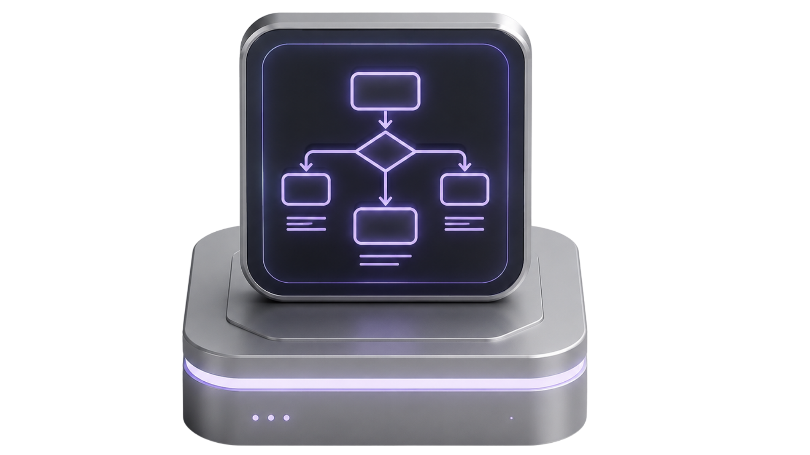
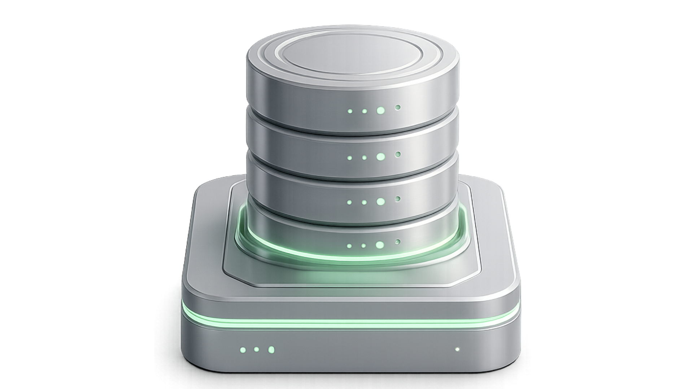
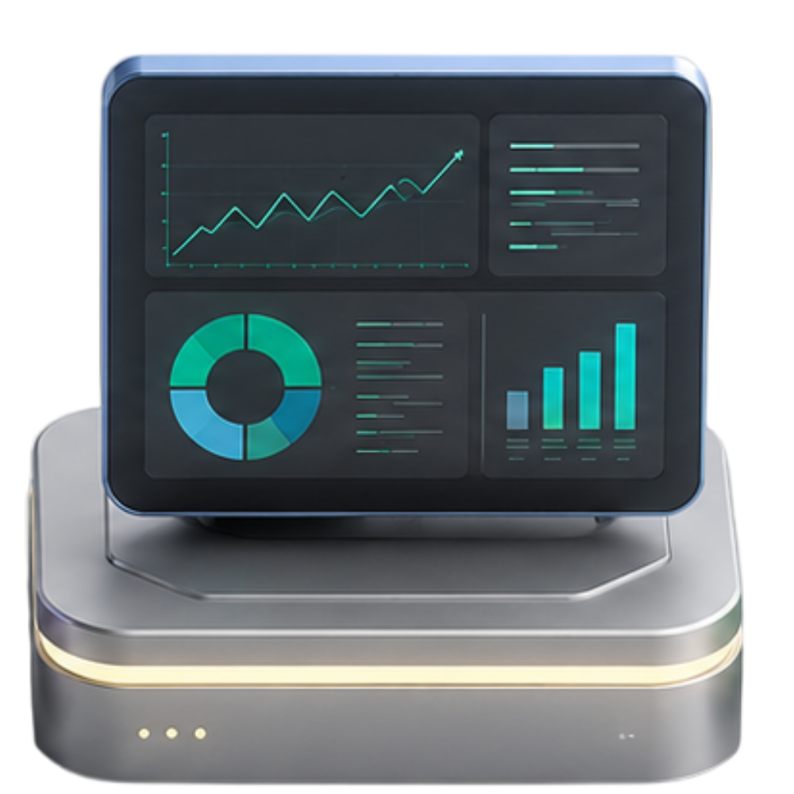

01
Prozesse
Welche Abläufe wiederholen sich häufig und binden Fachzeit, obwohl sie klaren Regeln folgen?
Wir prüfen, wo KI und Automatisierung in Ihrem Unternehmen realistisch entlasten können. Ohne Tool-Hype, ohne pauschale Versprechen und ohne unnötig komplexe Projektstruktur.
Die Potenzialanalyse ist kein Verkaufs-Pitch für ein bestimmtes Tool. Sie dient dazu, Prozesse, Engpässe und sinnvolle Einsatzbereiche strukturiert zu prüfen.

Welche Abläufe wiederholen sich häufig und binden Fachzeit, obwohl sie klaren Regeln folgen?

Wo liegen Informationen verteilt in Tabellen, E-Mails, Dokumenten oder verschiedenen Systemen?
Welche Aufgaben können vorbereitet, geprüft, sortiert oder automatisch angestoßen werden?
Der Ablauf bleibt bewusst schlank. Ziel ist eine klare Einschätzung, kein schweres Beratungsprojekt.
Formular ausfüllen und Ausgangslage kurz beschreiben.
Prozesslage, Datenquellen und Engpässe einordnen.

Potenziale bewerten und Aufwand grob einschätzen.
Klare Empfehlung mit möglichen nächsten Schritten erhalten.
Kurze Angaben reichen für die erste Einordnung. Das Formular bleibt bewusst kompakt.
Eine klare erste Einschätzung, ob und wo sich KI-Automatisierung lohnt. Fokus: Aufwand, Nutzen, Priorität und ein sinnvoller nächster Schritt.
Ergebnis öffnenJa. Die erste Einschätzung ist kostenlos und dient dazu, sinnvolle Potenziale zu erkennen.
Nein. Die Analyse startet bei Ihren bestehenden Abläufen, Daten und Aufgaben.
Für Unternehmen mit wiederkehrenden Aufgaben, manuellen Dokumentenprozessen oder verteilten Datenquellen.
Die Angaben werden geprüft. Danach folgt eine kurze Einordnung und bei Bedarf ein Gespräch zur Vertiefung.